Ⅰ 本课目标Objectives
- 01说清 P / S / A / M 四档下，快门、光圈、曝光补偿各自由哪个拨盘负责
- 02读懂 M 档的曝光指示与红色警告，会用 B 门与 T 门做长时间曝光
- 03配置自动 ISO（自动1/2/3）并为风光、Vlog 各设一组
- 04选对测光模式，用曝光补偿与 AE/AF 锁定处理逆光与高反差
- 05把「风光」与「人像」两套参数存进 C1 / C2
- X-S20
- 带光圈环的镜头
- （可选）三脚架
- （可选）ND 滤镜
Ⅱ 先记住这张表：拨盘 × 模式Dial Map
富士的曝光操作是「物理优先」的：模式拨盘定分工，前后指令拨盘 + 镜头光圈环干活。下面这张表是本课的地基，建议直接对着相机拨一遍。
| 模式 | 前指令拨盘 | 后指令拨盘 | Fn 拨盘（出厂） |
|---|---|---|---|
| AUTO | 自动 / 场景定位 | 曝光补偿 | 胶片模拟 |
| P（程序 AE） | 程序切换 | 曝光补偿 | 胶片模拟 |
| S（快门优先） | 快门速度 | 曝光补偿 | 胶片模拟 |
| A（光圈优先） | 光圈 | 曝光补偿 | 胶片模拟 |
| M（手动） | 光圈（无光圈环时） | 快门速度 | 胶片模拟 |
| FILTER | 程序切换 | 曝光补偿 | 滤镜选择 |
| Vlog / 动画 / C1–C4 | 因该模式下所选曝光模式而异 | ||
两个关键例外
- 镜头有光圈环时，A 档与 M 档的光圈由镜头光圈环决定，前指令拨盘让位。若把光圈环转到 A（或镜头本身无光圈环），光圈才交回前指令拨盘。
- 两个拨盘的分工都可以在「按钮/拨盘设置 > 命令转盘设定」里重新指派（第 8 课）。
Ⅲ P / S / A / M 逐档实操P · S · A · M
P 程序自动：把「程序切换」变成自己的构图工具
相机会自行组合快门与光圈。你觉得这个组合不合适（比如想在白天把背景虚化得更明显），就转前指令拨盘——快门与光圈同步变化、曝光量不变，这叫程序切换。
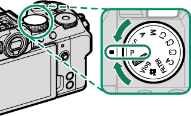
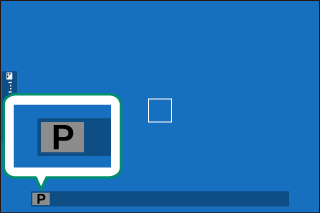
程序切换在三种情况下不可用：闪光灯功能设置为 TTL、动态范围选为自动、动画模式下。关闭相机即取消程序切换，恢复默认组合。
S 快门优先：风光里的流水、车轨、飘云
用前指令拨盘选快门速度，相机自动配光圈。若所选速度下无法获得正确曝光，光圈数值会变红——这就是「光线不够快 / 太亮压不住」的提示。若主体超出测光范围，光圈显示「–––」。
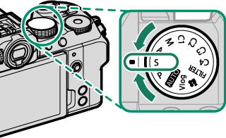
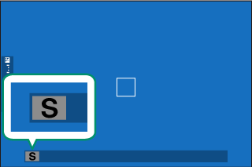
慢门风光的三个必做动作
- 低于 1 秒时屏幕显示倒计时定时器——这是正常现象，说明正在曝光。
- 把「图像质量设置 > 长时间曝光降噪」设为开，可减少斑点，但会增加拍完后的处理等待时间。
- 一定上三脚架。长时间曝光期间任何移动都会让照片失焦。
A 光圈优先：风光的景深与光斑
用镜头光圈环选光圈，相机配快门速度。若所选光圈下快门无法给出正确曝光，快门速度会变红。半按快门期间也可继续调整光圈。
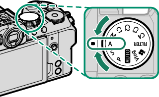
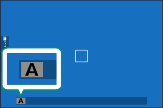
A 档最好用的隐藏功能是景深预览：把「景深预览」指派给某个功能按钮后，按住它会显示 L 图标并把光圈真正收缩到你设定的值——取景时看到的就是最终的景深，而不是全开光圈下的假象。风光判断「前景到远山是否都在焦内」全靠它（具体指派在第 8 课）。
M 手动曝光：读曝光指示，而不是猜
M 档下后指令拨盘选快门速度、镜头光圈环选光圈（无光圈环时用前指令拨盘）。屏幕上的曝光指示显示当前组合过曝或欠曝多少，把它调到 0 附近即为你认可的曝光。
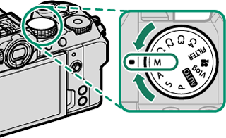
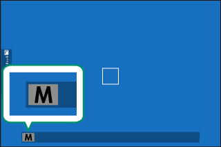
M 档下「屏幕不准」的解药
默认情况下 LCD 可能不反映真实曝光。到「屏幕设置 > 手动模式下预览曝光/白平衡」选 预览曝光/白平衡，屏幕就会实时显示曝光结果。但用闪光灯时不要用这个模式——那时画面会因为闪光未触发而显得很暗。
附 长时间曝光：T 门与 B 门
| 方式 | 怎么操作 | 限制与提示 |
|---|---|---|
| T 门（1 秒及更慢） | 在 S / M 档把快门速度调到 1 秒以下 | 曝光中显示倒计时；必须上三脚架 |
| B 门（BULB） | 快门速度调到 BULB → 完全按下并按住快门，松开结束 | 最长 60 分钟；仅限「静态图像 / 多重曝光」驱动模式，且快门类型不能是电子快门 |
| 遥控快门 | 选购 RR-100 或第三方电子快门线，经 Φ2.5→3.5 mm 适配器接麦克风/遥控插孔 | 在动画 / Vlog 档接入时，需把「麦克风/遥控快门装置」选为遥控 |
Ⅳ 感光度：三个自动 ISO 怎么分工ISO
按 ISO 按钮查看与更改感光度。范围是 ISO 160–12800，另可扩展到 L（80 / 100 / 125）与 H（25600 / 51200）——H 下容易出现斑点，L 下动态范围会变窄，只在特殊情况下用。
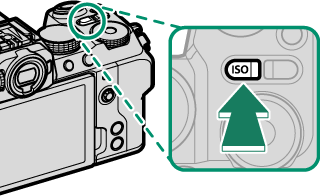
AUTO 档之外，感光度有三种「自动」。它们的逻辑完全一样：先待在默认感光度，只有当达到理想曝光所需的快门速度会低于「最低快门速度」时，才把 ISO 往上抬，直到最大值为止。三档的出厂默认值如下：
| 自动档 | 默认感光度 | 最大感光度 | 最低快门速度 | 适合 |
|---|---|---|---|---|
| 自动1 | 160 | 800 | 自动 | 画质优先：风光上三脚架、光线可控 |
| 自动2 | 160 | 3200 | 自动 | 通用：白天街拍、随手记录 |
| 自动3 | 160 | 12800 | 自动 | 暗光优先：室内、夜景手持、Vlog |
每一项都可以自定义：默认感光度 160–12800、最大感光度 400–12800、最低快门速度 1/4000–30 秒或自动。两条规则要注意：若默认感光度被设得高于最大感光度，相机会把它压到最大值；若在最大感光度下仍会曝光不足，相机可能突破最低快门速度继续降速。
给风光和 Vlog 各配一套（建议现在就做）
- 风光：自动1 改成「默认 160 / 最大 800 / 最低快门 1/125」——上架子时宁可欠一点，也不让 ISO 偷偷升上去。
- Vlog：自动3 改成「默认 160 / 最大 6400 / 最低快门 1/50（或 1/60）」——保住帧率对应的安全快门，噪点后期还能救。
- 感光度关机后不会重设，下次开机还是上次的值——这点和索尼一致，别以为它会自己回自动。
- 模式拨盘在 F（动画）或 Vlog 时按 ISO 按钮，进入的是视频菜单的 ISO 项，与照片的 ISO 分开存储。
Ⅴ 测光：四种模式的取舍Metering
在「拍摄设置 > 测光」中选择。它决定相机如何判断「这张该有多亮」，风光和人像的选择完全不同。
| 模式 | 怎么算 | 风光 / 人像的用法 |
|---|---|---|
| 多重 | 分析构图、色彩与亮度分布后快速决定 | 默认就用它。绝大多数场景最稳，别急着换 |
| 中心加权 | 全画面测光，但中央区域权重最大 | 主体居中的传统构图、逆光人像做参考 |
| 点 | 只测画面 2% 区域的亮度 | 逆光、大光比：测天空保高光，或测主体保人脸 |
| 平均 | 整幅画面取平均 | 多张持续曝光一致（延时、接片）、黑白人像 |
两个会让测光「失效」的开关
- 当「AF/MF 设置 > 脸部识别/眼睛识别设置」或「对象检测设定」不是关时，你选的测光模式不生效——相机优先按识别到的人脸/对象测光。拍人像时这其实是好事，拍风光时记得把它们关掉。
- 把「AF/MF 设置 > 重点 AE 和聚焦区域互锁」设为开，测光点就会跟着你的对焦区域走——点测光 + 移动对焦框，就是最精确的风光选区曝光方式。
Ⅵ 曝光补偿：一个拨盘解决 80% 的光线问题Exposure Comp.
P / S / A 三档下，旋转后指令拨盘即可调整曝光补偿（也可在「按钮/拨盘设置 > 命令转盘设定」改派给其他拨盘）。逆光加、雪景加、暗调场景减——这套直觉你从索尼带过来就行。
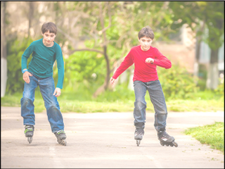
有一个坑要知道：曝光补偿可以在屏幕上预览，但以下三种情况屏幕显示的亮度可能不准——补偿量超过 ±3 EV、动态范围设为 DR200% / DR400%、或 D 范围优先级设为强 / 弱。视频同理：F-Log 录制或视频动态范围 200%/400% 时预览也会失真，此时切到 M 档直接调曝光最可靠。
M 档下也能用曝光补偿
当 M 档启用自动 ISO 时，可以把某个功能按钮设为「默认值(曝光补偿)」，或把 Fn 拨盘指派为曝光补偿。按下该按钮后旋转前后指令拨盘，就能在 M 档里继续用补偿——适合既要固定快门光圈、又要快速微调亮度的场景。
Ⅶ AE / AF 锁定：先测光，再构图AE/AF Lock
逆光风光的经典动作：把亮部放到画面中央测光 → 锁定 → 移回构图 → 拍。富士给了你三个层级的锁定工具。
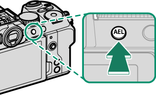
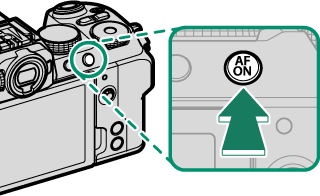
| 工具 | 锁什么 | 怎么用 |
|---|---|---|
| 半按快门 | 对焦 + 曝光 | 最常用。需「按钮/拨盘设置 > 快门 AF / 快门 AE」都为 ON |
| AEL 按钮 | 仅曝光 | 默认设定。把画面移到亮部 → 按住 AEL → 重新构图 → 拍 |
| AFON 按钮 | 仅对焦（需指派） | 把 AFON 指派为「仅限 AF 锁」后，可锁对焦而不锁曝光 |
两个细节：按住 AEL / AFON 期间，半按快门不会结束锁定；若把「按钮/拨盘设置 > AE/AF-LOCK 设定」改为 AE/AF-LOCK 开关切换，则必须再按一次才能解除锁定（不必一直按着）。另外，曝光锁定期间仍可用对焦棒重新定位对焦点——这是富士很方便的一点。
Ⅷ C1–C4：把两套配方存成档位Custom Banks
模式拨盘上的 C1–C4 是四个「参数库」，等于佳能的 C 档、索尼的 MR 回调。它存的是整套拍摄菜单设置，不只是曝光参数。
为什么 C1–C4 比 Q 菜单更值钱
Q 菜单改的是「这一次」，C1–C4 存的是「一整套」。到山上光线一变、要换到拍人像，拨一下拨盘就完成整套切换，不用逐项回想「上次那个胶片模拟是哪个」。第 6 课我们会把两套配方的内容填满。
Ⅸ 迁移提示From Sony / Canon
曝光操作，从索尼 / 佳能过来最容易踩的 5 个坑
- 光圈不一定在拨盘上：富士优先用镜头光圈环。你以前习惯的「后拨盘调光圈」在 A / M 档会失效——除非把光圈环转到 A。
- M 档的快门在「后」拨盘：和索尼的「前快门后光圈」相反。前拨盘在 M 档只负责光圈（且仅当镜头无光圈环）。
- 曝光补偿是模拟拨盘逻辑：P/S/A 下始终由后指令拨盘负责，不需要先按 +/− 键。
- 测光会被对象检测接管：开了脸部/眼睛识别或对象检测，你选的测光模式就不生效。索尼是分开算的，这点最容易困惑。
- AUTO 档 ≠ 索尼的绿色 AUTO：它的「场景 + 对象检测」判断不透明，风光别用；直接进 A 档。
Ⅹ 课后练习Exercise
-
01
简答：M 档下，快门速度、光圈、ISO 分别用哪个部件调节？
参考答案
快门速度＝后指令拨盘；光圈＝镜头光圈环（镜头无光圈环或光圈环置于 A 时，改用前指令拨盘）；ISO＝按 ISO 按钮后选择。
-
02
判断：选了点测光后，打开「脸部识别/眼睛识别设置」，点测光依然按画面中央 2% 区域测光。
参考答案
错误。只要脸部/眼睛识别或对象检测不是「关」，所选测光模式就不生效，相机会按识别到的对象测光。
-
03
选择：逆光风光，想让天空不过曝又保住前景细节，最直接的一套操作是？
参考答案
关闭对象检测 → 用点测光测天空（可开「重点 AE 和聚焦区域互锁」）→ 按住 AEL 锁定曝光 → 重新构图 → 拍。若仍不够，再补 −1/3 ~ −1 EV 曝光补偿。
实拍小任务（可选，风光向）
同一风光场景用 A 档拍三张：曝光补偿 −1 / 0 / +1。回放时逐张对比直方图与高光警告，记下「你偏好的那张」落在哪个补偿值——这通常就是你的个人风格基准。然后把这一套（A 档 + 自动1 + 多重测光 + 你的基准补偿）存进 C1。
Ⅺ 出处与延伸Sources
- 本课对应的官方说明书页面（主教材）
- 选择拍摄模式 — AUTO / P / S / A / M / FILTER / C1–C4、程序切换、景深预览、B 门与 T 门、拨盘功能表
- 感光度 — ISO 范围、L/H 扩展、自动1/2/3 的默认值
- 测光 — 多重 / 中心加权 / 点 / 平均，以及与对象检测的关系
- 曝光补偿 — 操作方式与预览失真条件
- 对焦/曝光锁定 — 半按快门、AEL、AFON 与 AE/AF-LOCK 设定
- 版权说明
- 本课插图均取自 FUJIFILM 官方在线说明书，© FUJIFILM Corporation，仅用于个人学习。
学习提醒
曝光解决的是「亮度」，下一课解决「清晰」——对焦系统。风光、人像、运动三种主体各有一套富士的对焦方案，AF-S / AF-C / DMF 与索尼的对应关系也会在那节课讲清。